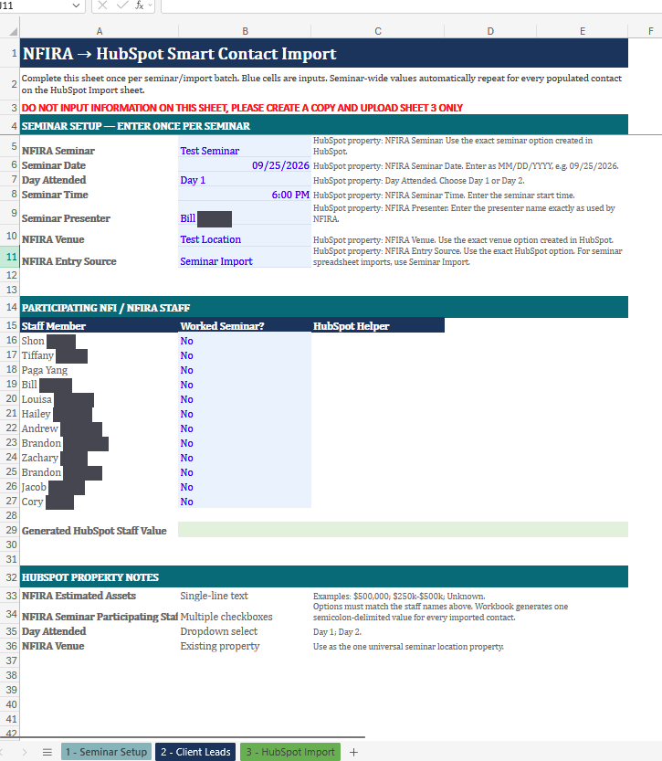
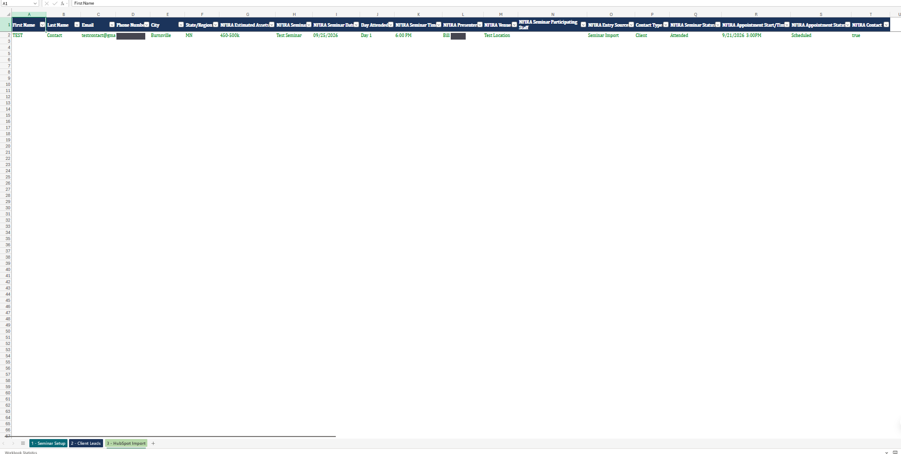
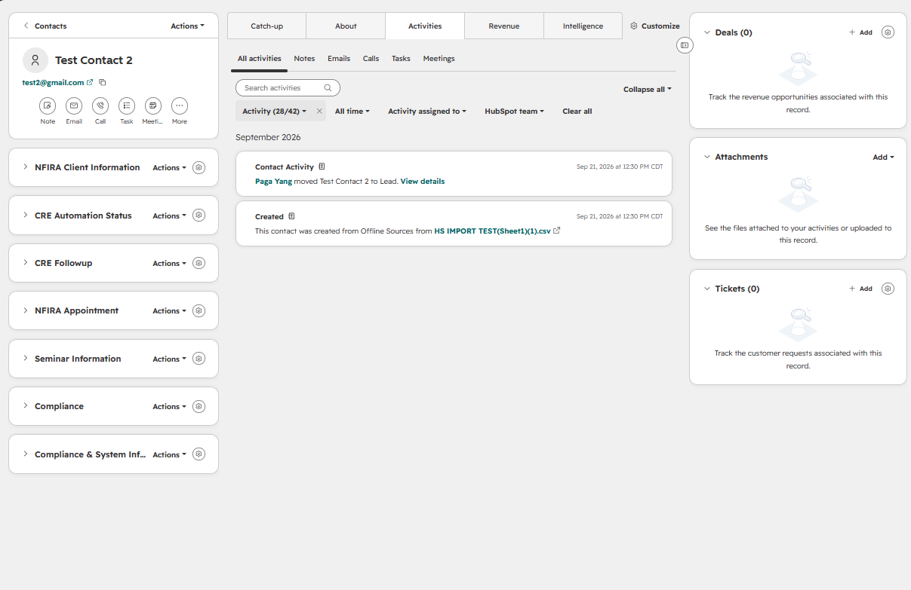
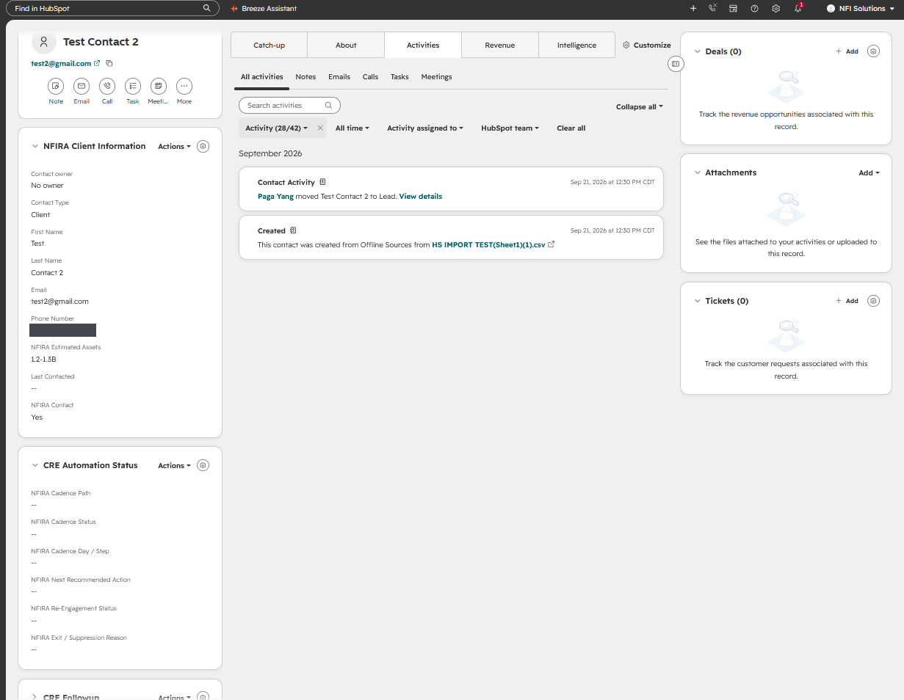
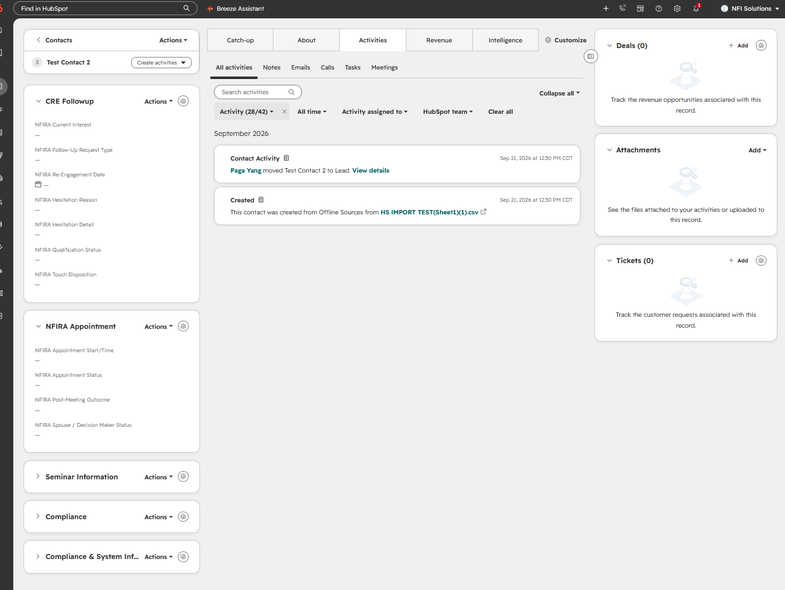
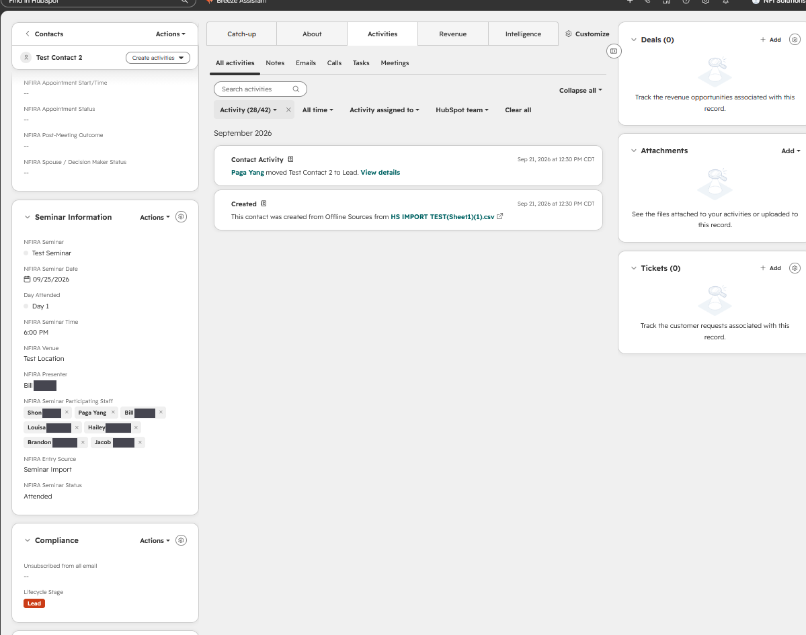
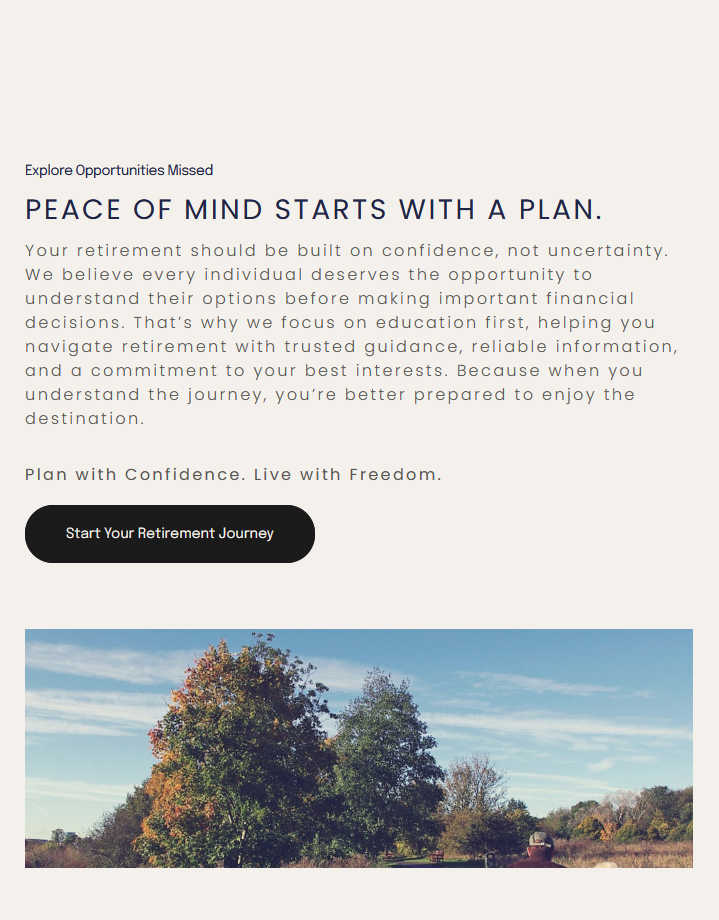
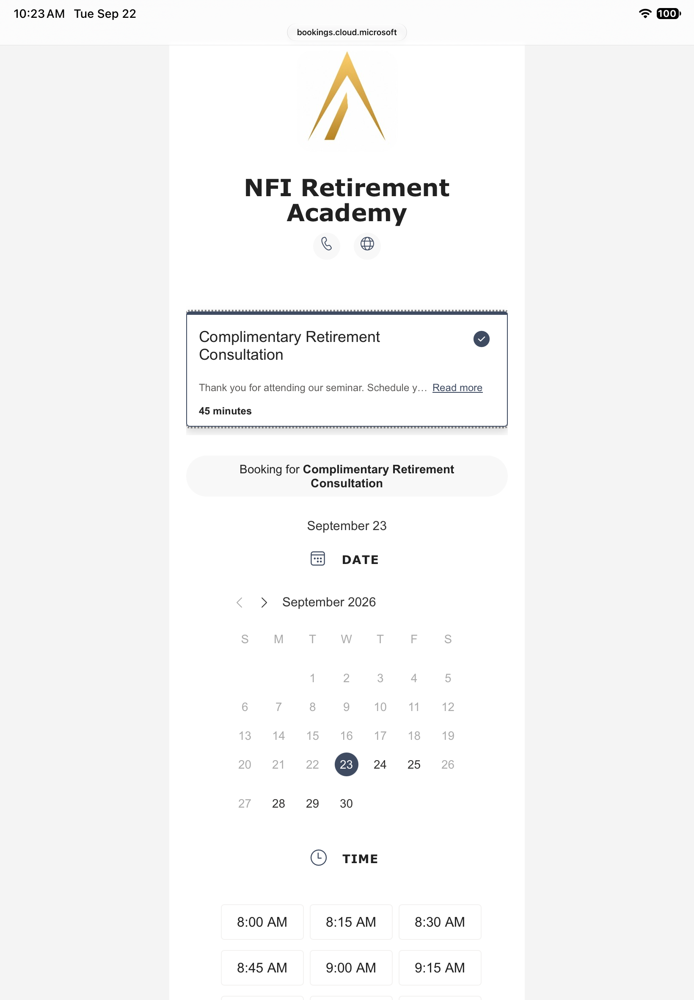
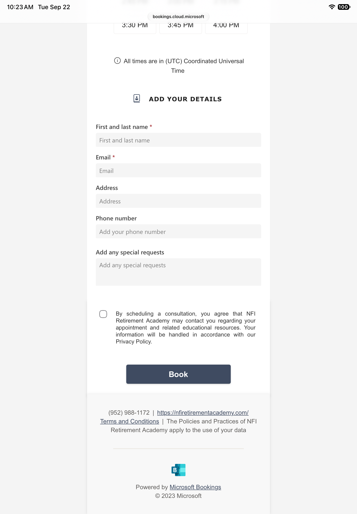
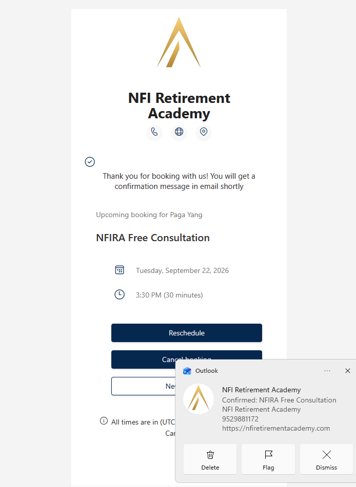

Screenshots use test or sample data. Staff last names are obscured. My own name appears where I tested the booking flow. Select any screenshot to view it at full size.
The problem
Staff needed to record seminar outcomes and manage follow-up without learning HubSpot’s internal logic. Clients needed to book a consultation without a login or unnecessary decisions.
I designed the interfaces for both audiences within the tools already in use, connecting everyday tasks to the wider NFIRA Client Relationship & Engagement system.
Enter once, inherit everywhere
Staff were repeating seminar details across scattered spreadsheets before importing attendees into HubSpot. I designed a three-sheet workbook that separates seminar setup from attendee entry.
Seminar Setup
Staff enter shared details, such as the date and venue, once. Blue cells identify the inputs. Labels and nearby HubSpot property hints explain each field.

Record what happened
Client Leads
Each attendee gets one row, with seminar details inherited automatically. Staff record whether the person attended and booked a consultation. They do not need to decide which follow-up path applies.
The worksheet instruction makes that boundary clear: “Enter event truth only... CRE determines cadence routing after import.”

Check before import
HubSpot Import
The third sheet generates the HubSpot-facing output. A Routing Preview and Import Check column help staff identify problems before importing the records.
This is the workbook’s translation layer. Everyday answers become the values the CRM needs, without asking staff to set internal routing codes themselves.

A contact view built around the work
The workbook addresses data entry. Inside HubSpot, staff also need a clear way to understand an existing contact.
I reorganized the contact view into collapsible cards for client information, follow-up, appointments, and seminar details. Automation status has its own card so staff can check progress without working through unrelated properties.
Hailey should only be asked for information she would reasonably know from doing her job. That rule guided which fields belonged together and what needed to remain visible.




Clarify consent
During refinement, I split an ambiguous “Compliance” card into separate areas for marketing consent and consent to share information with insurance carriers. The revised labels make the purpose of each consent easier to distinguish.
A direct path to booking
The client-facing experience needed fewer decisions. The NFIRA website’s “Start Your Retirement Journey” button links directly to the “Complimentary Retirement Consultation” service.
The booking page uses NFIRA branding and takes clients to availability without a service catalog or staff-selection step in the configured flow.


Ask only for what is required
Name and email are required. Address, phone, and special requests are optional. Keeping the required inputs limited was intended to reduce effort for someone booking after a seminar.
This was a design decision to support completion, not a measured conversion result.

Confirmation and a shared-device limitation
The confirmation screen shows the booking and provides options to reschedule, cancel, or start a new booking. I tested the flow myself before launch.
The shared-iPad experience still requires a manual reset through “New booking.” It does not automatically clear the session between attendees. That remains a gap between the original requirement and the delivered experience.

What the work demonstrates
The workbook, contact cards, and booking flow apply interface design within existing platforms. My work was deciding how to organize information and guide each audience through its task, using Excel, HubSpot, and Microsoft Bookings.
The delivered interfaces separate staff input from CRM routing and give clients a direct booking path. They do not represent a custom-built application.
What I would improve
I would add an automatic reset for the shared iPad and verify that each attendee begins with a fresh session.
I would also observe Hailey using the revised contact cards. The current structure follows the operational requirements, but direct usability feedback is still needed to test those assumptions.